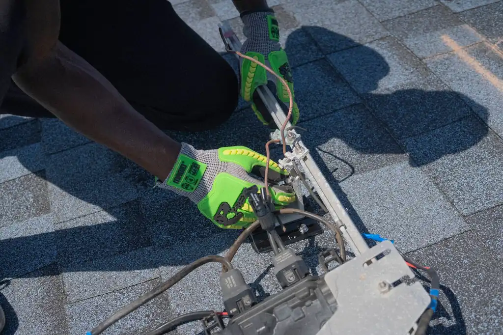
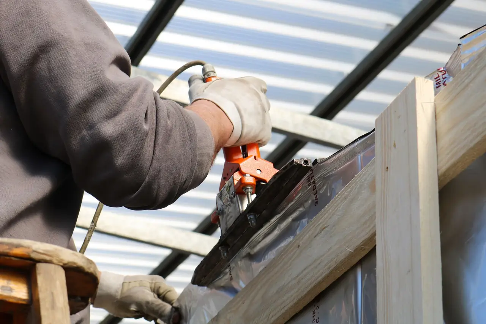

Focused arrival windows
Useful updates and clear arrival timing.
Roofing in Glenwood is essential for maintaining the integrity of your home. Our Glenwood roof contractor provides top-notch services, ensuring your roof remains in excellent condition. From repairs to installations, we are here to help you protect your investment.
Useful updates and clear arrival timing.
Review the approach and price before deciding.
Equipped vehicles and respectful cleanup.
Neighbors serving neighbors with follow-through.
Roofing in Glenwood is a critical service that ensures the safety and durability of homes in the area. With its unique climate and older residential structures, Glenwood requires specialized roofing solutions. Our Glenwood roof contractor has been serving the community for over a decade, providing high-quality roofing services tailored to the needs of local homeowners. We understand the common challenges faced by Glenwood residents, such as roof leaks and shingle curling, and offer effective solutions to keep your home safe and dry. Whether you need a roof inspection or a complete roof replacement, our team is equipped to handle it all.

Glenwood experiences a high demand for roofing services due to its unique weather patterns and older homes. Our Glenwood roof contractor provides a comprehensive range of services to meet these needs, including 24/7 roofing services in Glenwood.
Our roof installation services in Glenwood cater to various styles of homes, ensuring your new roof meets local building codes and enhances your property's value. We use high-quality materials like asphalt shingles and metal sheets.
View service →02When it's time for a roof replacement in Glenwood, we provide detailed assessments and options that suit your budget. Our Glenwood roof contractor ensures a seamless process from start to finish.
View service →03Our roof repair services in Glenwood address common issues such as leaks and missing shingles. We respond quickly to emergency situations, ensuring your home stays protected.
View service →04Regular roof inspections are vital in Glenwood to prevent costly repairs. Our team identifies potential problems early, helping you maintain your roof's integrity.
View service →05Our preventative roof maintenance plans in Glenwood ensure your roof remains in optimal condition year-round. We offer scheduled inspections and maintenance services tailored to your needs.
View service →06Flat roofing services in Glenwood are ideal for commercial buildings and modern homes. We use durable materials that withstand the local climate and provide long-lasting protection.
View service →07Our shingle roofing services in Glenwood offer a variety of styles and colors to enhance your home's curb appeal. We ensure proper installation and durability to withstand the elements.
View service →08Tile roofing services in Glenwood provide a unique aesthetic and exceptional durability. Our team is experienced in installing and maintaining tile roofs that can withstand Florida's weather.
View service →09Metal roofing services in Glenwood are becoming increasingly popular due to their longevity and energy efficiency. We offer a range of styles to fit any home design.
View service →Roofing services in Glenwood are executed with a focus on local building codes and climate considerations. Our Glenwood roof contractor understands the unique challenges posed by the area's tropical weather, ensuring that all installations and repairs comply with Florida Building Code Compliance. We emphasize timely service without compromising quality, utilizing tools like roofing nailers and safety harnesses to ensure safety on every job. Our team is familiar with the common roofing materials used in Glenwood, such as asphalt shingles and metal sheets, and we ensure proper installation techniques are followed for durability.
Tropical storms can cause significant damage to roofs, leading to urgent repair needs. Our team is trained to respond quickly to storm damage and provide emergency roofing services in Glenwood.
Many homes in Glenwood may have outdated roofing systems that require special attention during repairs. We assess each home's unique needs and provide tailored solutions that respect the original architecture.
High humidity can lead to issues like mold and moss growth on roofs. We offer roof cleaning and maintenance services to prevent these problems and extend the life of your roof.
This code ensures that all roofing work meets safety and durability standards, especially in hurricane-prone areas like Glenwood.
Following NRCA standards guarantees high-quality roofing practices, ensuring your roof is built to last.
Glenwood's unique climate and building stock contribute to specific roofing problems. Understanding these issues can help homeowners take preventive measures and seek timely repairs.
Frequent heavy rains can overwhelm aging roofs, leading to leaks. Many homes in Glenwood are older and may not have modern waterproofing. We perform thorough inspections to identify weak points and provide effective repair solutions to prevent leaks.
High humidity and heat can cause shingles to curl and deteriorate faster, particularly in older homes. Our team recommends regular inspections and maintenance to catch these issues early and extend the life of your roof.
Many homes lack proper ventilation, causing heat buildup in the attic, which can damage roofing materials. We assess ventilation systems and recommend improvements that can enhance airflow and reduce energy costs.
The humid climate in Glenwood fosters moss growth, which can trap moisture against the roof, leading to rot. We offer moss removal services and preventive treatments to keep your roof healthy and free from growth.

Roofing pricing in Glenwood varies based on several factors, including the type of material used and the complexity of the job. Typical 2026 pricing for roof installation ranges from $5,000 to $15,000 depending on the square footage and material choice. For repairs, costs can range from $200 to $1,500, depending on the extent of the damage. Our Glenwood roof contractor aims to provide affordable roofing in Glenwood without compromising on quality.
Different materials like asphalt shingles or metal roofing can significantly affect pricing, with metal typically costing more but offering better longevity.
Larger roofs require more materials and labor, leading to higher costs. It's essential to consider the total square footage when budgeting.
If your roof has significant damage, repairs may involve more extensive work, increasing the overall cost. We provide detailed assessments to outline necessary repairs.
Navigating Glenwood is easy thanks to its well-known landmarks. Our team uses these points of interest to efficiently reach our clients for roofing services.
This center is a hub for local events, making it a familiar reference point for our service routes.
Located centrally, Glenwood Park is a great landmark that helps us navigate to nearby neighborhoods quickly.
This landmark is often used for community gatherings, and we frequently service homes in its vicinity.
This shopping area is a popular spot for residents, allowing us to connect with customers nearby.
A well-known local church, we often receive calls for roofing services from families in this area.
This school is a landmark for families in the area, and we often provide services to homes nearby.
This area has a mix of retail and office spaces, leading to a steady demand for commercial roofing services.
With various retail stores, we frequently provide roofing maintenance and repairs to ensure business continuity.
Highway 77 provides easy access to Glenwood, allowing our team to reach clients promptly.
This charter school is centrally located, making it a convenient landmark for navigating the area.
Our Glenwood roof contractor proudly serves various neighborhoods, each with unique roofing needs. We understand the local architecture and common challenges faced by homeowners.
Glenwood Hills features many older homes that require regular maintenance and inspections to prevent leaks and structural damage. Our team is just minutes away, ensuring quick response times for any roofing needs.
In Glenwood Park, we see a mix of residential and commercial properties, each needing tailored roofing solutions. We can easily reach this area within 15 minutes for emergency services.
Glenwood Estates features larger homes that often require complex roofing systems, which we are well-equipped to handle. Our team can respond rapidly to any requests in this upscale neighborhood.
Harrison Place has many homes with unique architectural styles, requiring specialized roofing solutions. We can be on-site within 20 minutes to assess any roofing issues.
Our case studies highlight successful roofing projects we've completed in Glenwood, showcasing our expertise and commitment to quality.
Severe storm damage to a residential roof in Glenwood Park. We conducted an emergency inspection and provided a full roof replacement using durable asphalt shingles, ensuring compliance with local codes. The homeowner was thrilled with the quick turnaround, and the new roof has held up well through subsequent storms.
Moss growth and leaks in an older home in Glenwood Hills. Our team performed a thorough cleaning and applied a protective coating to prevent future moss growth, along with necessary repairs. The homeowner reported no leaks during heavy rains, and the roof looks like new.
Roof ventilation issues in a home in Glenwood Estates. We installed a new roof ventilation system that improved airflow and reduced heat buildup in the attic. The homeowner noticed a significant decrease in energy bills and improved indoor comfort.
Glenwood's climate influences roofing demand throughout the year. Understanding seasonal impacts can help homeowners prepare for necessary services.
Spring often brings heavy rains, which can expose leaks in older roofs. It's a good time for inspections and repairs.
The summer heat can cause materials to expand and contract, leading to wear and potential leaks.
Fall is a busy season for roofing as homeowners prepare for winter. Leaves can clog gutters, leading to water damage.
Winter storms can bring heavy snow and ice, which can weigh down roofs and cause structural issues.
Our roofing services extend beyond Glenwood, covering several nearby cities to ensure comprehensive support for our clients.
When hiring a roofing contractor in Glenwood, asking the right questions can help you find a reliable professional. Here are key questions to consider.
The materials used can significantly affect the longevity and performance of your roof. A knowledgeable contractor will provide tailored recommendations.
Hiring a licensed and insured contractor protects you from liability and ensures the work meets local standards.
References allow you to gauge the contractor's reliability and quality of work based on previous customer experiences.
Understanding warranty details ensures you're covered for any future issues related to the roofing work performed.
A good contractor will have a clear process for addressing unforeseen problems, ensuring transparency and effective communication.
Lic. #FL123456
Lic. #FL654321
GAF
CertainTeed
$2M general liability
member
sponsor
The best roofing services in Glenwood include roof installation, repair, and maintenance tailored to local climate conditions and building styles.
Typical roofing costs in Glenwood range from $5,000 to $15,000 for installation, depending on materials and roof size.
Look for licensed, insured contractors with good reviews, a strong local presence, and experience with your specific roofing needs.
Schedule a roof inspection after severe weather events or at least once a year to identify potential issues early.
Regular maintenance, timely repairs, and keeping gutters clean can help prevent roof damage in Glenwood's climate.
Not seeing your question? Our local team can help you understand urgency, scheduling and what to expect.
Ask the local team
We invite you to reach out for any roofing needs. Our team is available to assist you promptly, ensuring a quick response.